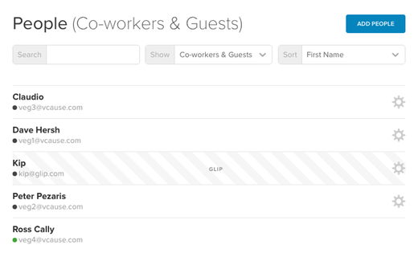
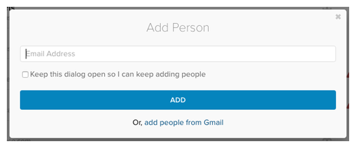
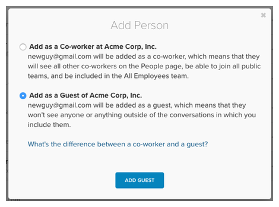
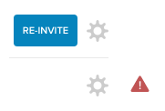
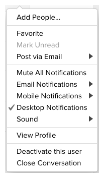
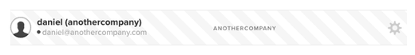
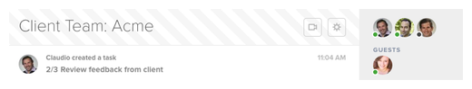

As a communication platform, the most important thing on Glip is the people. The People page, accessible via the "People" link in the left pane, lists all of the people on Glip that you can communicate with, and allows you to add more. Any co-workers of yours that are already on Glip will be listed here, as well as any guests that you've added.

Start typing in the search box to narrow down the list of people. Use the Show and Sort dropdowns to filter and sort the list of people. One helpful filter is "Admins", which will show you the list of your company's administrators on Glip.
Adding someone to Glip is as easy as clicking the Add People button and then entering a email address.

If your company uses a private email domain (i.e., bob@acme.com and not bob@gmail.com) you can just enter the first part of the email address (i.e., "bob") and click "Add". Glip will automatically add the "@acme.com" part. Also note the option to import contacts from your Gmail contact list.
People that you add with email addresses on your company's private domain are automatically considered co-workers. For anyone that you add with an email address on a different domain, however, you'll be asked to indicate whether they should be added as a co-worker or a guest. If your company doesn't use email addresses on a private domain (i.e., you use webmail addresses, like gmail), you'll be asked to make the co-worker/guest choice for everyone that you add.

Look for the "Guests" section later in this article for more information on the difference between co-workers and guests.
Once you've added someone to Glip, there's no need to wait for them to join before starting to communicate with them. They'll receive your messages via email until they join, and can even reply to those emails and have their messages appear right in the conversation stream.
TIP: If you’d prefer not to enter email addresses individually, and your company uses a private email domain, just tell your co-workers to go to glip.com and sign up with their work email address. They’ll automatically be put into your company’s network on Glip.
For people that haven't yet signed up for Glip, you'll see a Re-invite button. Click on that to send out a new email invitation. Occasionally, you might see a red exclamation point at the right side of a person's entry. This indicates that email can not be delivered to that person's email address. If the address isn't correct, remove the person and re-invite them with their correct address. Otherwise, contact Glip customer support for assistance.

As you mouse over each person's row on the People page you'll see a gear icon appear to the right.

Click on it to expose a menu with the following options:
- Add People - Adding people to a one-on-one conversation will create a new group with the combined membership.
- Favorite - Moves your conversation with the given person into a Favorites section at the top of the left pane.
- Mark Unread - If you want to make sure that you come back to a conversation later, marking it as unread with set the unread message indicator next to its entry in the left pane to "1".
- Post via Email - Displays the unique email address for your conversation with the given person, which can be used to post via email.
- Mute All Notifications - Turn off Email, Mobile, Desktop notifications, as well as sounds, for this conversation.
- Email Notifications - Override your global email notification settings. For example, you may have email notifications set to Every 15 Minutes on the Preferences page, but you could elect to turn them off for this conversation.
- Mobile Notifications - Override your global mobile notification settings. For example, you may have mobile notifications turned off for People conversations on the Preferences page, but you could elect to turn them on for this conversation.
- Desktop Notifications - Even if you have desktop notifications enabled, you can turn them off for this conversation.
- Sound - Override the default sound played when new messages are posted in this conversation.
- View Profile - View the given person's profile page.
- Change to guest - Only available to admins, this option will change the given employee to a guest. If the person in question was a guest, the option would be "Change to co-worker" and would send the person an invitation to change companies and become on employee in your company on Glip.
- Deactivate this user - If the given person is a co-worker, this will delete their Glip account. If the person is a guest, the option is "Remove this guest" and it will just remove them from your company. The person can still use Glip independent of their role as your guest. Note that once someone has joined Glip, only an admin can remove them.
- Close Conversation - Closing a conversation will remove it from the left pane,
but will not delete the contents.
Guests are people that you can communicate and collaborate with on Glip, but do not work at your company. They might be clients, partners, contractors or vendors. Anyone that you don’t consider an employee.
Within a given conversation, guests don’t have many limitations. They can post anything (chats, tasks, files, etc.) and can see the entire conversation history. Importantly, though, they don’t see anything on Glip, be it people or teams, outside of the conversations that you’ve explicitly included them in. This implies that guests also aren't part of the default All Employees team.
For example, say Dave from Acme adds Jill at ClientCo as a guest and then adds her to a “Launch Project” team that includes Peter and Tracy from Acme. Jill will only see the Launch Project team on the Teams page, and only Dave, Peter and Tracy on the People page. She won’t see any other Acme people or teams. Note that Jill and other people from ClientCo can start to use Glip for their own purposes, without needing to create a separate account. You only ever need one account on Glip. (Learn more.)
Beyond what people and teams they see, guests do have some other limitations. Guests can’t add people to your company, can't create teams for your company, or generally manage your teams (e.g., add/remove people, rename, create folders, etc.).
If your company has a paid subscription to Glip there’s no reason to hesitate about adding as many guests as you need. You don’t have to pay for guests as part of your subscription.
The guests displayed on the People page include the people that you have added as a guest to your company on Glip, people that have added you as a guest of their company, and people from other companies that you happen to be in a team with. For example, a partner of yours from another company may have added both you and someone from a vendor of theirs to a project team. That vendor will appear as a guest on your People page because of the shared membership in that project team.
Guests are further identified on the People page with a striped background, as well as their company's domain.

When you're in a conversation that contains guests, the heading of the page is striped. In the case of team and group conversations, the guests are listed in a separate section of the right pane. This is to help make sure that you're aware that there are people from outside of your company participating in the conversation.

Comments